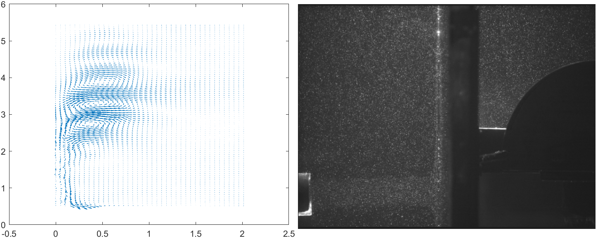
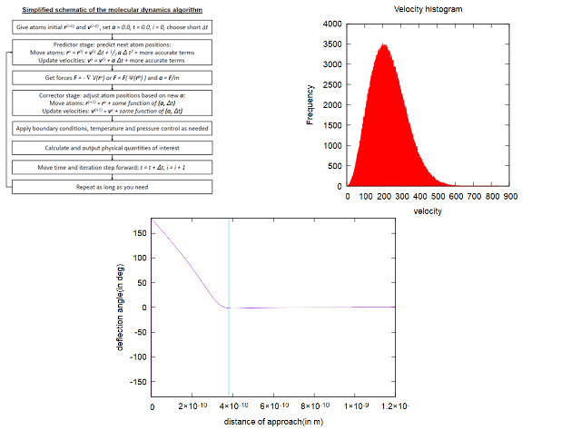
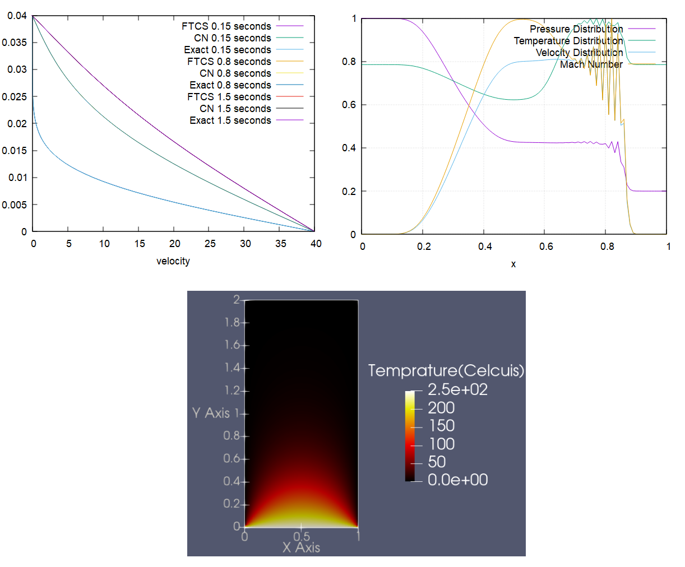
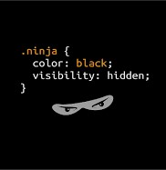

Research Projects
-
Development of code for finding vortices in turbulent flow
Guide: Prof. Amit Agrawal, Mechanical Engineering, IIT Bombayy
Aim to understand and analyze the coherent structures formed in flow fields by using Reduced Order Modelling techniques like Proper Orthogonal Decomposition and Dynamic Mode Decomposition. We analyzed a jet impingment flow field and found out that maximum amount of vortices form for a Strouhal number of 0.15. I had also proposed a POD based method to rank the DMD modes on the basis of energy
-
Molecular Simulations
Guide: Prof. UV Bhandarkar, Mechanical Engineering, IIT Bombay
Wrote C++ code from scrath for various types of molecular simulations. Performed MD simulation for gaseous Argon and found its temperature to very good accuracy. Learnt about Potential Energy surfaces of molecules and how they can be used to perform Quasi-Classical simulations.
Other Projects
-
IIT Bombay Rocket Team

We are an IN-SPACe recognised technical team of 30+ engineers, building high-power Rockets under the guidance of ISRO scientists and IIT professors, with the aim to participate in SA Cup 2022. I work in the Aerodynamics and Structures Subsystem of the team wherein we work on flow control techniques, CFD simulations, structural design, composite manufacturing.
-
CFD Simulations
Modeled the 1-D Euler equations for Sod Shock Tube problem using the Steger-Warming FVS algorithm. We had also numerically solved the startup problem of Couette flow using FTCS and Crank-Nicolson algorithm
-
Fluid Flow and Heat Transfer analysis in Gas Tungsten Arc Welding
Modelled the weld pool and welding arc in a GTAW process. Analysed the velocity and temperature distributions in the weld arc and weld pool. Learnt on how we can control the process parmaetrs to get the temperature and velocity distribution that we want. Compared flat welding process with the vertical welding process.
-
Measurment Techniques used in Pulse Oximetry
Read and researched about working principle of pulse oximeters. Discussed on some drawbacks of pulse oximeters and how they can be corrected. Made comparision with another popular method to measure SpO2, Co-oximetry.
-
Robot Modeling

As part of the Summer of Science project conducted by MnP club, I had read the book "Robot Modeling and Control" by Spong and Vidyasagar and had made a report on this topic. You can find the report, here.
-
WebDev
Revamped the entire website of Aeromodelling club, with a team of 8 people. I had worked on the gallery page of the website. I had primarily used html, css, bootstrap to make the page. The website was also made responsive so that it can be comfortably viewed on any device. This website is also completely developed by me.